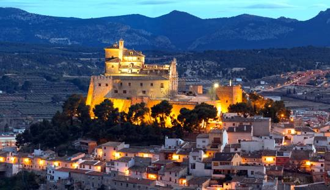

Caravaca de la Cruz
Famosa por su Santuario y los Caballos del Vino.
Famosa por su Santuario y los Caballos del Vino.
Santuario de la Esperanza y descenso del río Segura.

Callejuelas medievales y pinturas rupestres.
Historia milenaria y puerto de culturas.
Reserva marina y gastronomía pesquera.